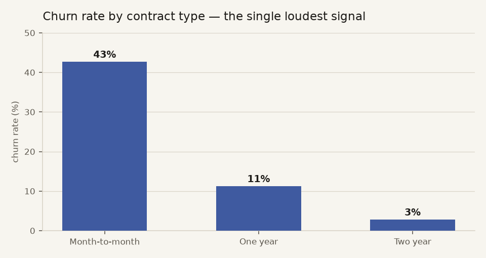

CHURN RADAR_
who's about to cancel, and why — scored live in your browser
The customer
The prediction
—
marker = dataset base rate
Why — top signals for this customer
Bars are each input's contribution to the log-odds: gold pushes toward churn, blue pulls away. This is the actual model arithmetic, not a post-hoc explainer.
Model card — honest numbers on held-out data
The shipped model is plain logistic regression — on this dataset it beats gradient boosting while staying fully readable. Trained on the public IBM Telco dataset: 7,043 real customer records, 25% held out, stratified. No synthetic data, no leakage (TotalCharges dropped as collinear with tenure × monthly charges).
The analysis
